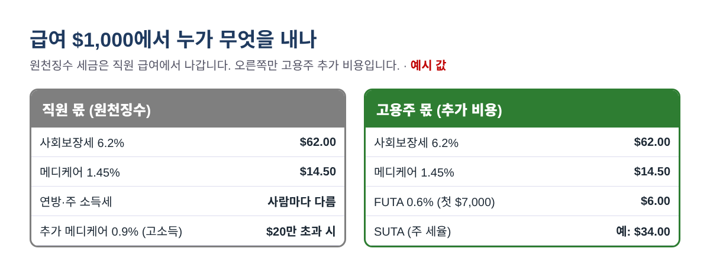
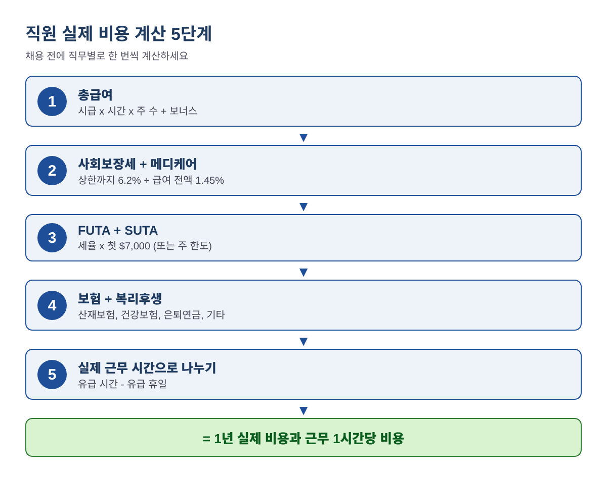
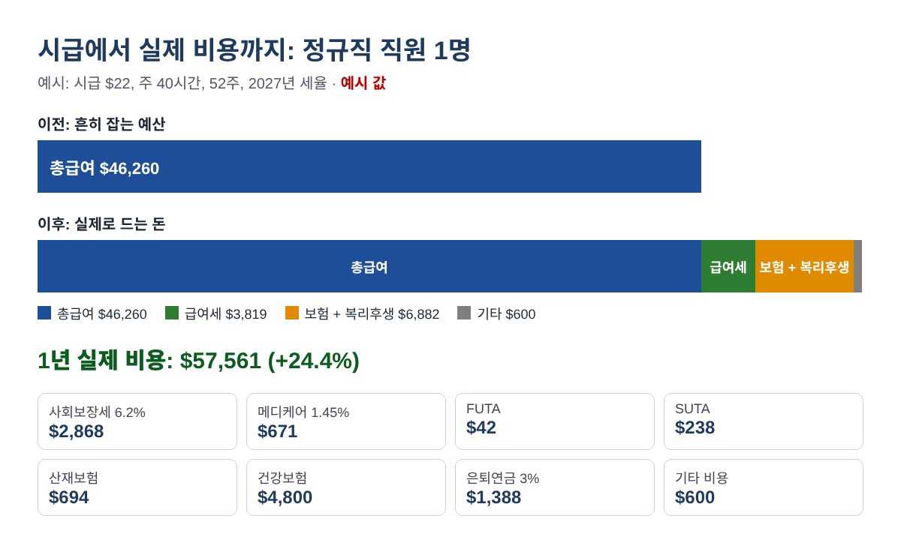
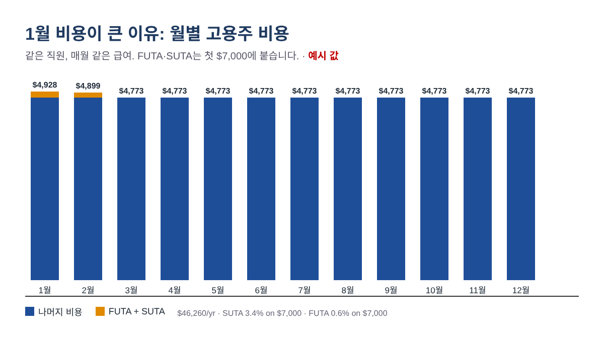

직원 한 명 뽑으면 실제로 얼마 들까? 시급 외 고용주 세금·보험·복리후생 계산법 (2026·2027)
시급 $22로 직원을 뽑았는데, 분기가 끝나고 통장을 보면 생각보다 훨씬 많은 돈이 나가 있습니다. 이상한 일이 아닙니다. 미국에서 직원을 고용하면 급여 외에도 고용주 몫의 사회보장세·메디케어, 연방·주 실업세, 산재보험, 그리고 제공하는 복리후생 비용이 따로 붙습니다. 이 글은 가게·식당·사무실을 운영하는 사장님이 직원 한 명의 1년 실제 비용을 직접 계산할 수 있도록, 엑셀이나 구글 시트에 그대로 넣을 수 있는 수식과 함께 순서대로 정리했습니다. 채용 예산을 잡거나 가격을 정할 때 이 숫자를 기준으로 삼으시면 됩니다.
교육용 정보입니다. 이 글은 세무·법률·급여 자문이 아닙니다. 주·지방 급여세, 보험료, 노동법은 지역마다 다르므로 결정 전에 주정부 기관, 보험사, 급여 대행사에 꼭 확인하세요. 예시에 나오는 금액은 모두 예시 값입니다.
시급이 곧 비용이 아닌 이유
급여를 처리할 때 돈은 두 종류로 나뉩니다. 첫째는 직원 급여에서 떼는 돈(원천징수)입니다. 직원 몫 사회보장세 6.2%, 메디케어 1.45%, 소득세가 여기에 해당하고, 이미 총급여 안에 들어 있으므로 사장님의 추가 비용이 아닙니다. 둘째는 총급여 위에 더 내는 돈입니다. 고용주 몫 6.2%와 1.45%, 실업세, 보험, 복리후생이 여기에 해당합니다. 실제로 비용을 늘리는 것은 두 번째이고, 많은 채용 예산에서 빠지는 것도 바로 이 부분입니다.

2026·2027년에 알아야 할 연방 숫자
| 고용주 비용 | 2026 | 2027 | 계산 방식 |
|---|---|---|---|
| 사회보장세 (고용주 몫) | 6.2% | 6.2% | 과세 상한까지의 급여에만 |
| 사회보장세 과세 상한 | $184,500 | $192,300 | 초과분에는 6.2% 없음 |
| 메디케어 (고용주 몫) | 1.45% | 1.45% | 급여 전액, 상한 없음 |
| FUTA (연방 실업세) | 0.6% | 0.6% | 첫 $7,000에 6.0%, 최대 5.4% 크레딧 차감 |
| SUTA (주 실업보험료) | 주 통지 세율 | 주 통지 세율 | 세율과 과세 한도는 주마다 다름 |
$200,000 초과 급여에 붙는 추가 메디케어세 0.9%는 직원 급여에서만 떼고, 고용주가 같은 금액을 내지는 않습니다. FUTA의 5.4% 크레딧은 주 실업세를 제때 냈다는 전제입니다. '크레딧 감액 주(credit reduction state)'에서는 크레딧이 줄어 Form 940으로 더 내야 하며, 미국 노동부(DOL)가 매년 11월 최종 목록을 발표하므로 연말 예산을 마무리하기 전에 확인하세요.
직원 1명 실제 비용 계산 5단계

1단계. 총급여
총급여 = 시급 x 주당 시간 x 유급 주 수 + 보너스입니다. 유급 휴가와 공휴일도 급여를 주는 주이므로 포함합니다. 연봉제라면 연봉 + 보너스입니다. B2에 시급, B3에 주당 시간, B4에 주 수, B5에 보너스가 있다면: =B2*B3*B4+B5
2단계. 사회보장세·메디케어 (고용주 몫)
B6에 총급여가 있을 때 2027년 사회보장세는 =MIN(B6,192300)*6.2%, 메디케어는 =B6*1.45%입니다. 2026년이면 192300 대신 184500을 넣습니다. MIN() 함수가 6.2%가 과세 상한을 넘지 않게 막아 줍니다.
3단계. 실업세 (FUTA·SUTA)
FUTA는 =MIN(B6,7000)*0.6%로, 직원 1인당 1년에 최대 $42입니다. SUTA는 =MIN(B6,B7)*B8이며, B7은 우리 주의 과세 임금 한도, B8은 주정부 통지서에 적힌 세율입니다. 새로 시작한 고용주는 보통 신규 고용주 표준 세율을 받습니다. 다른 주 숫자를 그대로 쓰면 안 됩니다. 과세 한도는 연방 최소 기준인 $7,000부터 그보다 훨씬 높은 주까지 다양합니다.
4단계. 보험·복리후생·기타 비용
산재보험(workers' comp)은 보통 급여 $100당 요율로 견적이 나옵니다: =B6/100*B9. 여기에 건강보험 고용주 부담 월액 x 12, 은퇴연금 매칭(예: =B6*3%), 급여 대행 수수료·유니폼·장비·교육비 같은 기타 연간 비용을 더합니다. 고용주가 내는 건강보험료와 은퇴연금 납입은 일반적으로 사회보장세·메디케어 과세 급여가 아니므로 여기에 급여세를 다시 붙이지 않습니다.
5단계. 합계와 실제 근무 1시간당 비용
1~4단계를 모두 더하면 1년 실제 비용입니다. 이것을 직원이 실제로 일한 시간, 즉 유급 시간에서 유급 휴일을 뺀 시간으로 나눕니다. B10에 유급 휴일 수가 있다면: =합계/(B3*B4-B10*B3/5). 서비스 가격을 정하거나 한 타임 근무가 수지가 맞는지 판단할 때는 이 숫자를 쓰세요.
계산 예시 (2027년)
한인 업소에서 흔한 세 가지 경우를 위 순서대로 계산했습니다. 주 세율과 보험료를 포함해 모든 값은 예시입니다.
| 예시 | A: 시간제 계산원 | B: 정규직 매장 직원 | C: 연봉제 매니저 |
|---|---|---|---|
| 급여 | 시급 $17 x 주 25시간 | 시급 $22 x 주 40시간 + 보너스 $1,000 | 연봉 $200,000 |
| 총급여 | $22,100.00 | $46,760.00 | $200,000.00 |
| 사회보장세 + 메디케어 | $1,690.65 | $3,577.14 | $14,822.60 |
| FUTA + SUTA | $280.00 ($7,000의 3.4%) | $1,042.00 ($40,000의 2.5%) | $147.00 ($7,000의 1.5%) |
| 산재보험 | $265.20 ($100당 $1.20) | $1,636.60 ($100당 $3.50) | $600.00 ($100당 $0.30) |
| 건강보험 + 은퇴연금 + 기타 | $300.00 | $7,602.80 | $20,800.00 |
| 1년 실제 비용 | $24,635.85 | $60,618.54 | $236,369.60 |
| 급여 외 추가 비율 | 11.5% | 29.6% | 18.2% |
| 실제 근무 1시간당 비용 | $19.40 (휴일 6일) | $30.93 (휴일 15일) | $123.11 (휴일 20일) |
B를 손으로 확인해 보면: $22 x 40 x 52 = $45,760에 보너스 $1,000을 더해 총급여 $46,760. 사회보장세 $46,760 x 6.2% = $2,899.12, 메디케어 $678.02, FUTA $42, SUTA $40,000 x 2.5% = $1,000, 산재보험 $1,636.60, 건강보험 $450 x 12 = $5,400, 은퇴연금 3% = $1,402.80, 기타 $800. 합계 $60,618.54입니다. 실제 근무 시간은 2,080 - 120 = 1,960시간이므로 $60,618.54 / 1,960 = 근무 1시간당 $30.93, 시급 $22보다 약 40% 높습니다.
C는 과세 상한이 어떻게 작동하는지 보여 줍니다. 사회보장세는 $200,000 x 6.2% = $12,400이 아니라 $192,300 x 6.2% = $11,922.60입니다.

1월에 돈이 몰리는 것에 대비하기
FUTA와 대부분의 주 실업세는 직원별로 매년 급여의 앞부분에만 붙습니다. 정규직이라면 1~2월에 거의 다 내게 되고, 매년 1월에 다시 시작됩니다. 총급여 $46,260 직원에게 매월 같은 급여를 준다면 1월 비용은 약 $4,928, 3월은 약 $4,773입니다. 한 명이면 작은 차이지만 직원이 열 명이면 무시할 수 없고, 하필 연말 청구서가 몰리는 시기와 겹칩니다.

매출이 얼마나 더 필요할까?
직원 급여는 매출이 아니라 매출총이익에서 나갑니다. 원가를 빼고 매출 1달러당 60센트가 남는다면, 1년 $57,561짜리 직원을 감당하려면 =57561/60% = 연 $95,934, 월 약 $7,995, 주 약 $1,845의 추가 매출이 필요합니다. 구인 공고를 내기 전에 이 숫자부터 계산해 보세요.
흔히 하는 실수
- 시급만 보고 예산 잡기. 1년 실제 비용을 기준으로 하세요.
- 원천징수 세금을 고용주 비용으로 계산하기. 직원 몫 7.65%와 소득세는 총급여 안에서 나갑니다.
- 고연봉자의 과세 상한을 잊거나, 메디케어에도 상한을 적용하기. 메디케어에는 상한이 없습니다.
- 다른 주의 SUTA 세율·한도 쓰기. 우리 주 통지서를 쓰세요.
- 시간당 가격을 정할 때 유급 휴일 빼먹기.
- 시간제 직원마다 $7,000 한도가 따로라는 점 잊기. 총급여가 같아도 시간제 5명이 정규직 1명보다 실업세가 많을 수 있습니다.
- 비용을 아끼려고 직원을 계약자(1099)로 처리하기. 잘못 분류하면 밀린 세금과 가산세가 생길 수 있습니다.
자주 묻는 질문
급여 외에 직원 한 명당 얼마나 더 드나요?
고용주 급여세만 약 7.65%에 실업세가 더해집니다. 산재보험, 건강보험, 은퇴연금 매칭까지 넣으면 총급여보다 10~30% 이상 더 드는 소규모 사업체가 많습니다. 복리후생과 주에 따라 크게 달라지니 직접 계산해 보세요.
추가 메디케어세 0.9%도 고용주가 내나요?
아닙니다. $200,000 초과 급여에서 직원 몫으로 떼기만 하고 고용주 부담은 없습니다.
11월이나 12월에 채용하면 어떻게 되나요?
그해 첫 급여에 FUTA·SUTA가 붙고, 같은 직원이라도 1월에 다시 시작됩니다. 두 번 모두 예산에 넣으세요.
팁도 계산에 넣어야 하나요?
신고된 팁은 사회보장세·메디케어 과세 급여이므로 고용주 몫도 붙습니다. 고용주 FICA를 추정할 때 예상 연간 팁을 총급여에 더하세요.
우리 주 실업보험료율은 어디서 확인하나요?
주 실업보험 기관이 보통 매년 초에 세율 통지서를 보냅니다. 신규 고용주는 등록할 때 세율을 받습니다.
채용 전 간단 점검표
- 보너스와 유급 휴일을 포함한 총급여 계산
- 고용주 사회보장세(과세 상한 적용)와 메디케어 추가
- FUTA, 그리고 우리 주 통지서 기준 SUTA
- 해당 직종의 산재보험 견적
- 건강보험 부담분, 은퇴연금 매칭, 급여 대행 수수료, 기타 비용
- 주 장애보험·직업훈련·유급휴가 급여세와 시 세금 확인
- 실제 근무 1시간당 비용과 손익분기 매출 계산
- 1월 비용 증가에 대비한 1분기 자금 준비
위 과정을 그대로 해 주는 직원 1명 실제 고용 비용 계산기 2026-2027은 아래 무료 키트 다운로드에서 가입 없이 무료로 받으실 수 있습니다(엑셀 + PDF 가이드).
고지: 이 글은 교육용 정보이며 세무·법률·급여 자문이 아닙니다. 세율과 규정은 바뀔 수 있으니 숫자를 쓰기 전에 아래 공식 출처나 전문가에게 확인하세요.
출처
- IRS Publication 15 (Circular E), Employer's Tax Guide
- IRS Topic No. 751, Social Security and Medicare withholding rates
- IRS Topic No. 759, Form 940 (FUTA)
- IRS: FUTA credit reduction
- SSA: Contribution and Benefit Base
- SSA: 2027 Cost-of-Living Adjustment Fact Sheet
- U.S. Department of Labor: FUTA Credit Reductions
무료 키트 다운로드
글에서 설명한 내용을 그대로 따라 할 수 있는 도구입니다. 가입 없이 바로 받으세요.
- Excel 계산 도구 (.xlsx)True_Cost_of_Employee_Calculator_2026_EN_KR.xlsx · 27 KB
- 단계별 가이드 (PDF)True_Cost_of_Employee_Guide_2026_EN_KR.pdf · 504 KB
본인과 본인 사업에 무료로 쓰세요. 재판매·재배포는 하지 마세요. 일반 정보이며 세무·법률·회계 자문이 아닙니다. 숫자는 본인 자료로 꼭 확인하세요.